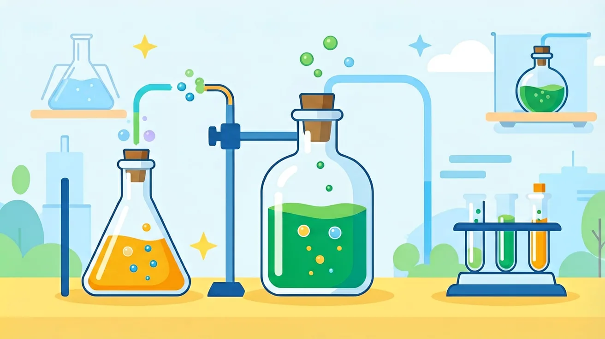
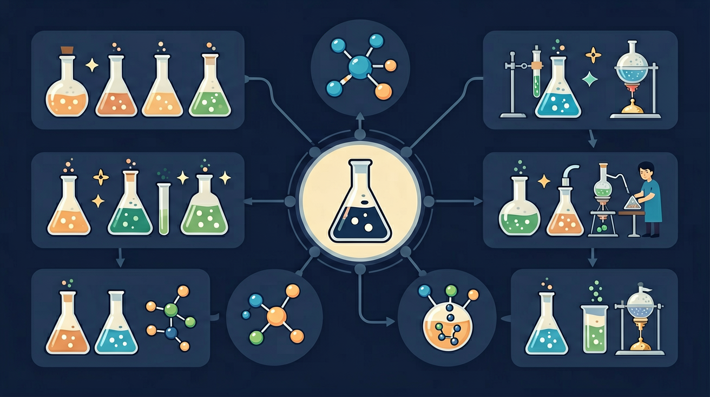

🧪 氧气的制取
实验室和工业中如何获得纯净的氧气？
2制氧方法
1模拟实验
8诊断题
≈30分钟

实验室和工业中如何获得纯净的氧气？


选一个最好奇的问题，课程将围绕它展开。
选择或输入后，本课围绕你的问题展开。
关于催化剂，以下说法正确的是？
MnO₂ 在反应前后质量不变、化学性质不变
只改变反应速率，不改变产物
常温即可反应，无需加热
操作简单安全
随开随关可控制产气速度
试管口放棉花（防粉末进入导管）
试管口略向下倾斜（防冷凝水倒流炸裂试管）
先预热（酒精灯来回移动）
再集中加热固体部位
结束时先撤导管再熄灯
选择装置的核心依据：反应物状态 + 反应条件（发生装置）；气体性质（收集装置）
| 类型 | 适用条件 | 典型实验 | 装置特点 |
|---|---|---|---|
| 固液常温型 | 固体+液体，不加热 | H₂O₂ + MnO₂ | 锥形瓶 + 分液漏斗 |
| 固体加热型 | 固体，需要加热 | KMnO₄ 加热 | 试管（口向下倾斜）+ 酒精灯 |
| 收集方法 | 适用气体 | O₂ 可用？ | 原理 |
|---|---|---|---|
| 排水集气法 | 不易溶于水 | ✅ 推荐 | O₂ 不易溶于水 |
| 向上排空气法 | 密度 > 空气 | ✅ 可用 | O₂ 密度 1.429g/L > 空气 |
| 向下排空气法 | 密度 < 空气 | ❌ 不可 | O₂ 比空气重 |
选择制氧方法，点击"开始实验"观察气泡产生过程
就绪 — 点击"开始实验"观察现象
| 对比项 | H₂O₂ + MnO₂ | KMnO₄ 加热 |
|---|---|---|
| 反应物状态 | 液体 + 固体催化剂 | 固体 |
| 反应条件 | 常温，加催化剂 | 加热 |
| 发生装置 | 固液常温型 | 固体加热型 |
| 操作难度 | ⭐ 简单 | ⭐⭐⭐ 较复杂 |
| 安全性 | ⭐⭐⭐ 高 | ⭐⭐ 中 |
| 产气可控性 | 随时控制（开关分液漏斗） | 不易精确控制 |
| 特别注意 | MnO₂ 可回收重复使用 | 试管口放棉花；先离后熄 |
• 未放棉花 → 粉末堵塞导管
• 先熄灯后撤管 → 水倒流炸裂
• 刚冒气泡就收集 → 气体不纯
• 试管口向上 → 冷凝水倒流
• 试管口放一小团棉花
• 先撤导管，后熄酒精灯
• 气泡连续均匀后才收集
• 试管口略向下倾斜
• 检验：带火星木条伸入，复燃
空气 → 加压降温液化 → 蒸发
N₂ 先蒸发（沸点低），O₂ 后蒸发
分别收集即得纯净气体
• 属于物理变化（无新物质）
• 产量大，适合工业需求
• 成本低于化学方法
通过 PhET 交互仿真，直观观察催化剂如何降低活化能、加速化学反应。尝试对比有无催化剂时的反应速率差异。
6 道快题，判断每种实验该选哪种装置和收集方法
Q1. 用 H₂O₂ 和 MnO₂ 制 O₂，选什么发生装置？
Q2. 加热 KMnO₄ 制 O₂，选什么发生装置？
Q3. 收集 O₂ 最推荐哪种方法？
Q4. 排水法收集时，何时开始收集？
Q5. KMnO₄ 法试管口放棉花的目的？
Q6. 如何检验气体确实是 O₂？
下列说法错误的是？
先独立作答，再点选项查看对错与错因。
用排水法收集氧气时，正确的导管操作顺序是
高锰酸钾制氧时试管口放棉花的主要作用是
检验氧气是否集满的正确方法是
高锰酸钾制氧的化学方程式为：2KMnO₄ → ____ + MnO₂ + O₂↑
答案：K₂MnO₄
需配平方程式并写出锰酸钾化学式
实验结束时应先____，再熄灭酒精灯，防止水倒吸
答案：移出导管
操作顺序错误会导致试管炸裂
关于催化剂在制氧实验中的作用，正确的是
设计实验探究5%、10%、15%双氧水在相同催化剂条件下的产氧速率
❓ 为什么收集氧气时导管不能一冒气泡就收集？
❓ 高锰酸钾制氧时棉花团到底有什么用？
❓ 工业制氧为啥不用实验室的方法？
学完这一课，这些问题你都能自信地回答。
🎯 能说出实验室制取氧气的2种方法及化学方程式
🎯 能根据反应物状态和条件选择发生装置
🎯 能分析排水法收集氧气的操作要点
分解过氧化氢和加热高锰酸钾是实验室常用方法
棉花团防固体粉末堵塞导管，刚开始的气泡是空气
过氧化氢法装置简单但慢，高锰酸钾法快但需加热
排水法收集时导管口连续均匀气泡才是纯氧
工业制氧用物理方法分离空气，成本更低
✅ 应略向下倾斜防冷凝水倒流
💡 忽视加热时水蒸气液化
✅ 氧气密度略大于空气应用排水法
💡 机械记忆气体收集规律
口诀：高锰酸钾加热忙，试管口要朝下放，气泡均匀再收集，先撤导管后撤光
类比：制氧像做汽水，反应物是原料，装置是生产线，气泡达标才能装瓶
开放任务：用三步写出你如何向同学讲清「氧气的制取」。